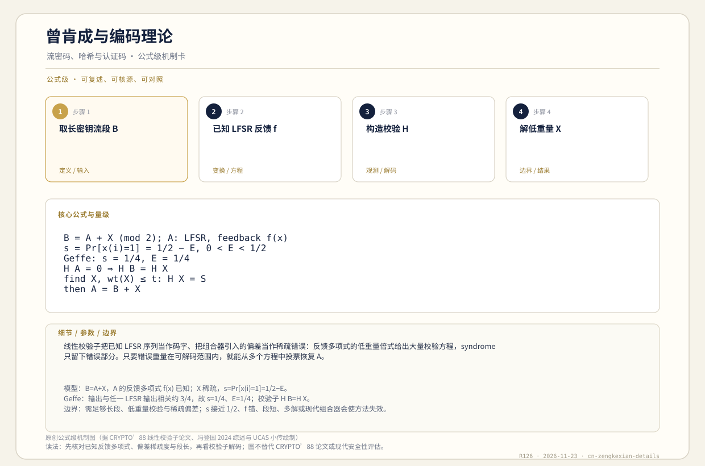

原理与机制
中国密码史：曾肯成与编码理论（Zeng Kencheng and Coding Theory）。### 熵漏与线性校验子
曾肯成 1986 年观察到 Geffe 生成器的熵漏：输出 z 与某条 LFSR 输出 x 的相关概率约 3/4，即错误率 s=Pr[z≠x]=1/4。把已知 LFSR 序列记为 A，把偏差记为稀疏序列 X，则 B=A+X（模 2），Pr[x(i)=1]=s=1/2−E，Geffe 下 E=1/4。### 校验子方程
设 H 为 A 的反馈多项式 f(x) 生成的校验矩阵，则 H A=0，所以 H B=H X。攻击变成“从 syndrome S=H B 恢复低重量错误 X”：枚举重量 ≤t 的 X，使 H X=S，再令 A=B+X。r-项式校验（f(x) 的低重量倍式）提供大量低重量方程；择多/最小距离把候选收敛。这不是“相关攻击的别名”，而是把已知线性结构当作码、把偏差当作错误。成功条件是可解码：段长足够、校验足够、错误重量在 t 以内。

为什么重要
相关攻击只用“输出与某条 LFSR 相关”这一条统计；线性校验子把问题提升为编码理论：已知线性序列是码字，未知偏差是错误，反馈多项式给出校验方程。它把“熵漏”变成可枚举、可验证的低重量解码问题，因而比单条相关攻击更系统。
应用与实例
1.确认目标组合器有一条已知反馈多项式 f(x) 的 LFSR，且输出与它的偏差 X 足够稀疏。2.取足够长的密钥流段 B。3.由 f(x) 的低重量倍式构造 r-项式校验，形成 H。4.计算 S=H B，枚举重量不超过 t 的 X 候选，保留满足 H X=S 者。5.用候选 A=B+X 重建 LFSR 并回代验证；记录段长、校验数、候选数和误报。6.若 s 不够小，先增加段长/校验数或改用改进算法，不要直接宣称恢复。### 不能怎么用
不能把 B=A+X 当成任意密码体制的通用模型；不能忽略 f(x) 已知、X 稀疏、段长足够这三个前提；不能把一次候选通过当成密钥恢复。
边界与攻击面
1.偏差不够稀疏：s 接近 1/2 时低重量假设失效，候选爆炸。2.反馈多项式未知或错误：H A≠0，syndrome 不再是纯错误校验子。3.段长不足：校验方程少，无法区分候选与误报。4.多个解：低重量 X 不唯一时，需要额外约束或回代验证。5.组合器升级：现代非线性过滤/驱动、带记忆或抗相关设计会使简单模型失效。6.计算成本：校验枚举与候选搜索随 t、r、段长增长，不能把理论可行性当成即时可跑。
历史与背景
曾肯成 1927 年 12 月 7 日生于湖南涟源，1946–1950 年就读清华大学数学系，1984 年 11 月创办中国科学院研究生院 DCS 中心，1991 年推动信息安全国家重点实验室，2004 年 5 月 13 日逝世。1986 年 6 月 28 日会议上报告“密码体制的熵漏现象和有效利用”；1988/1990 年 CRYPTO 论文给出线性校验子方法与改进算法；这些结论被《应用密码学手册》收录评述。
时间线、证据与争议
登记年份以来源账本为准；背景是理论基础中此前技术、机构与冲突的累积；过程只写有来源支持的参与者、地点与行动；结果写它改变了哪些标准、机器、课程或政策；争议写二手叙述与一手材料的差距。来源包括：Wikipedia search entry for 曾肯成与编码理论；《密码简史：穿越远古 展望未来》（杨义先、钮心忻，电子工业出版社，2020，ISBN 9787121398711）。
不要把“发生过”写成“已证明”，也不要把事件标题扩写成机制结论；没有日期的节点只作逻辑位置。
逐步示例与核验
事件时间线模型
背景 → 过程 → 结果 → 争议。背景写此前技术/制度；过程写可核参与者与时间；结果写后续标准、机器、课程或政策；争议写二手叙述与一手材料的差距。
参考出处
- Wikipedia search entry for 曾肯成与编码理论. https://zh.wikipedia.org/w/index.php?search=%E6%9B%BE%E8%82%AF%E6%88%90%E4%B8%8E%E7%BC%96%E7%A0%81%E7%90%86%E8%AE%BA
- 《密码简史：穿越远古 展望未来》（杨义先、钮心忻，电子工业出版社，2020，ISBN 9787121398711）. https://book.cppinfo.cn/Encyclopedias/home/index?id=3730464